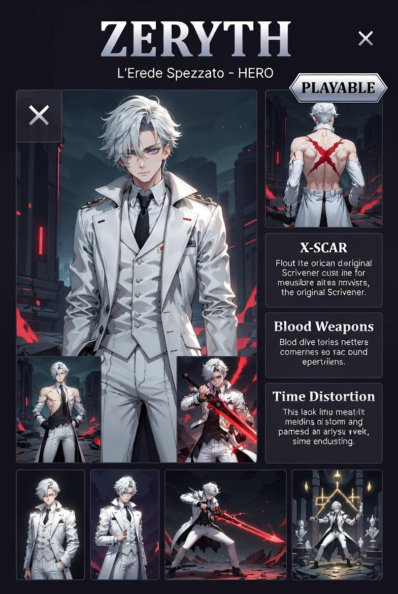

Erede dei Vettori del Tempo
Giocare Zeryth è giocare a un tempo diverso da quello del piano.
Gli ostacoli non scompaiono — diventano lenti.
| Tile | Effetto sulla rigenerazione |
|---|---|
| SHADOW | Moltiplicatore regen ×2.5 — danno ricevuto ridotto −25% |
| BLOOD_POOL | Moltiplicatore regen ×4.0 |
| LIGHT | Rigenerazione bloccata |
| FLOOR / CORRIDOR | Nessun modificatore |
| Soglia | Colore | Hex |
|---|---|---|
| > 60% | Grigio-viola | #8888aa |
| 35–60% | Viola scuro | #6666aa |
| 15–35% | Rosso | #ff4444 |
| < 15% | Rosso vivo | #ff0000 |
| Input | Azione | Valori |
|---|---|---|
| WASD | Movimento + facing direction | 200 px/s |
| LMB | Strike fisico | 20 dmg — cd 300 ms |
| RMB tap | Proiettile di sangue | 25 dmg — costa 8 integrità |
| RMB hold > 400ms | Spada di sangue (slash) | 40 dmg — drena 0.05/frame durante hold |
| SPACE | Secondo Fratturato (pausa tattica) | Rallenta mondo a 8% — costa mana |
| Scroll | Zoom camera | 0.4× – 2.0× |
| TAB | Impostazioni / rimappatura tasti | — |
| Parametro | Valore |
|---|---|
| Danno | 20 |
| Reach (distanza centro colpo) | 30 px |
| Hitbox raggio | 25 px |
| Cooldown | 300 ms |
| Costo | Nessuno |
| Parametro | Valore |
|---|---|
| Danno | 25 |
| Velocità proiettile | 400 px/s |
| Durata proiettile | 1500 ms |
| Costo integrità | 8 |
| Integrità minima per lanciare | 13 |
| Piercing | Sì — attraversa tutti i nemici in linea |
| Direzione | Mouse-aimable (facing WASD) |
| Parametro | Valore |
|---|---|
| Danno | 40 |
| Raggio slash | 50 px |
| Drain durante hold | 0.05 integrità/frame |
| Integrità minima mantenuta | 5 |
| Trigger | Release del tasto dopo hold > 400ms |
Final Boss — antagonista di Story Mode
| Aspetto | Dettaglio |
|---|---|
| Ruolo narrativo | Antagonista — protagonista del gioco, antagonista del romanzo e di Story Mode |
| Meccaniche da boss | Broken Second (distorsione temporale), Blood Weapons, Spada di sangue — le stesse abilità del giocatore usate contro di lui |
| Rallentamento tempo | Zeryth come boss può attivare la distorsione temporale — il campo di Aetherion rallenta |
| Integrità corporea | Il sistema di integrità rimane — Zeryth si auto-cura come il giocatore, ma con soglie diverse |
| Fase pre-scontro | Ripiega il cappotto, i guanti, gli strati esterni — con calma. Chi sa cosa sta per succedere. |
| Campo | Valore |
|---|---|
| File | src/characters/Zeryth.js |
| Estende | BaseCharacter |
| Visuale placeholder | Rectangle 20×28 — colore dinamico per integrità |
| Q / R / F | Riservati — non ancora implementati |
| Stato | ✓ implementato |